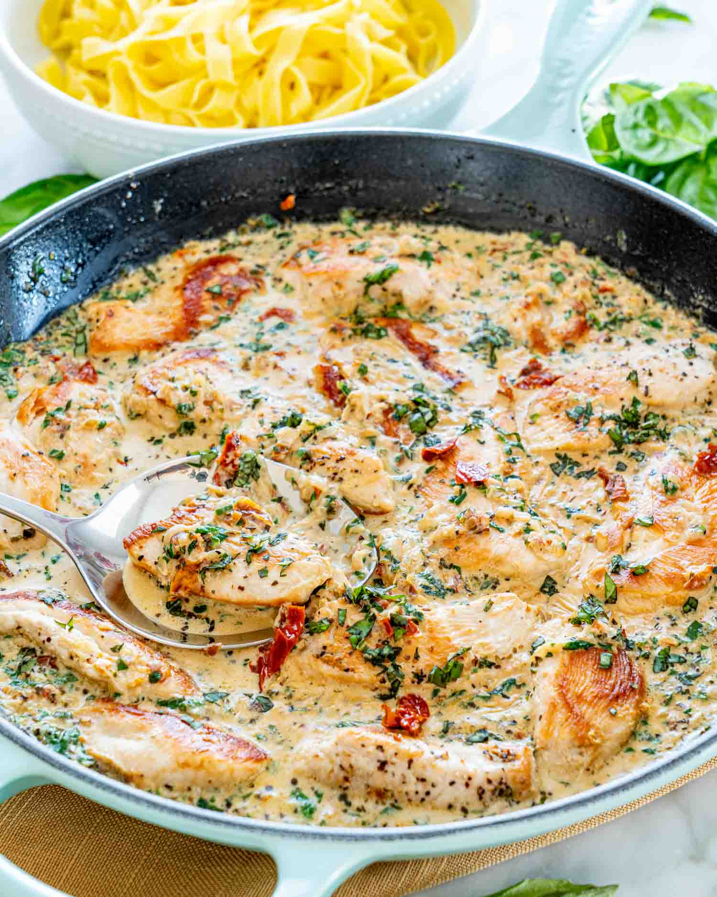

Pookie's Tuscan Chicken

Description
This is what we cooked the first time I ever stayed at your home. It was so freaking good.
Ingredients
- Chicken Breast
- Cherry Tomatos
- Cream Cheese
- Olive Oil
- Spinach
- Cream
Steps
- Prep chicken, cut breast in half
- Prep filling, chop cherry tomatos, chop spinach, and mix with cream cheese
- Stuff chicken with filling, and put in oven at 300 degrees
- Begin reducing cream and tomatos in sauce pan
- Plate chicken and top with sauce